Beyond the common "breads," there are some truly unique-looking dogs in the world! PurrPets explores these rare gems and their fascinating origins.
| Breed Name | Photo | Traits/Specialty |
|---|---|---|
| Afghan hound | 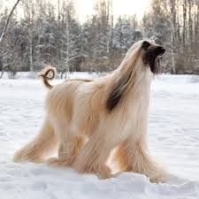 |
Long, silky coat, high-fashion appearance, and independent, cat-like temperament. |
| American Eskimo Dog | 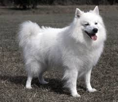 |
Striking white coat, high intelligence, and energetic, "busy" personality. |
| Anatolian Shepherd | 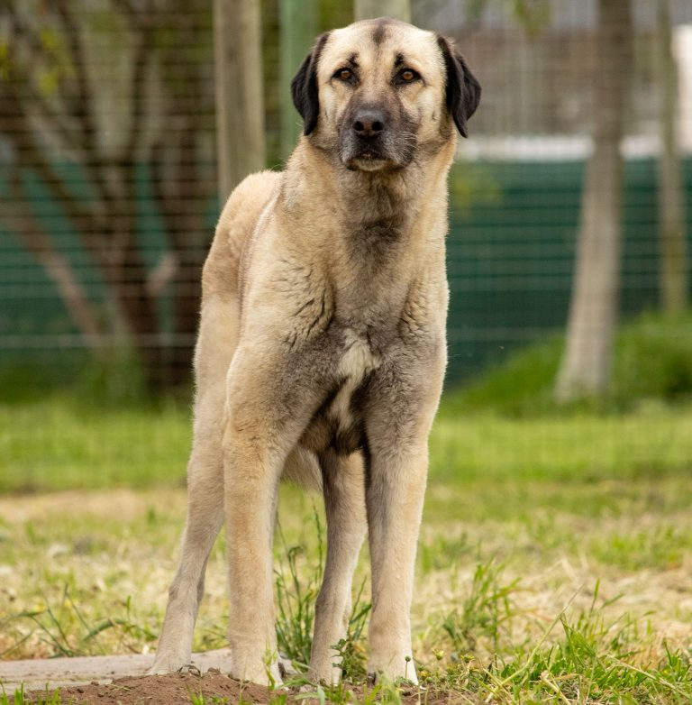 |
Remarkably hardy, loyal, and possess a "free-thinker" mentality that requires experienced handling. |
| English Cocker Spaniel | 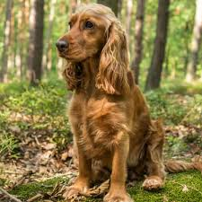 |
Cheerful, affectionate, and intelligent medium-sized gundog known for its long, feathered ears and merry personality. |
| Great Dane | 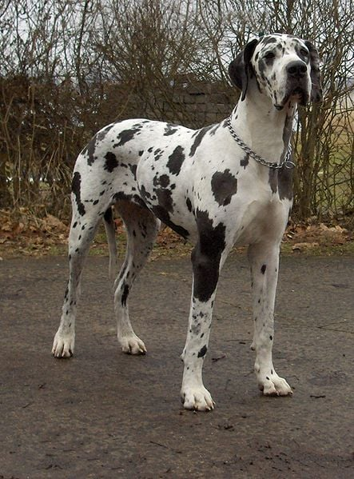 |
Immense stature, regal appearance, and affectionate nature. |
| Cavalier King Charles Spaniel | 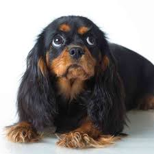 |
affectionate, gentle, and adaptable nature, often described as the "ultimate lap dog". |
| Yorkshire Terrier | 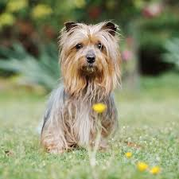 |
Long, silky coats, confident, and often bossy, feisty temperament. |
| Boxer | 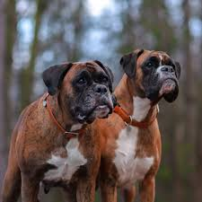 |
A high-energy, medium-to-large working dog known for its "eternal puppy" personality and distinctive "boxing" play style. |
| Chow Chow | 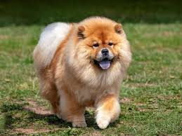 |
Lion-like appearance, independent "cat-like" personality, and unique blue-black tongue. |
| Bull Terrier | 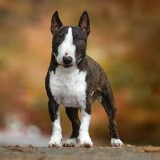 |
Egg-shaped head, comical demeanor, and muscular strength. |
| Basset Hound | 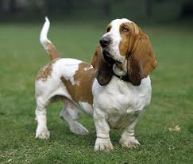 |
Affectionate demeanor at home, contrasted with a highly determined, stubborn, and vocal nature when following a scent. |
| Basenji | 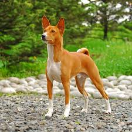 |
The "barkless dog," which possesses a unique combination of cat-like, independent, and athletic traits. |
Whether it is a rare breed or a common one, temperament is more important than looks. Always meet the dog before bringing them home!